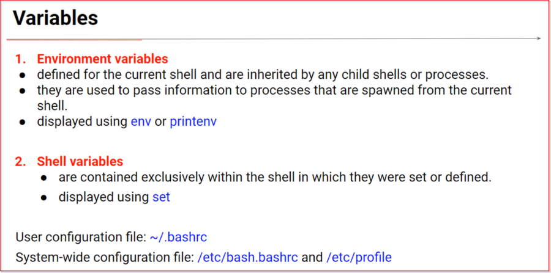
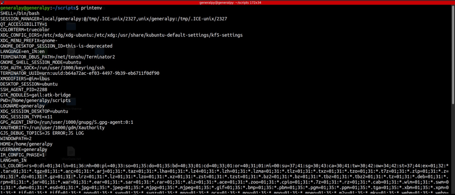
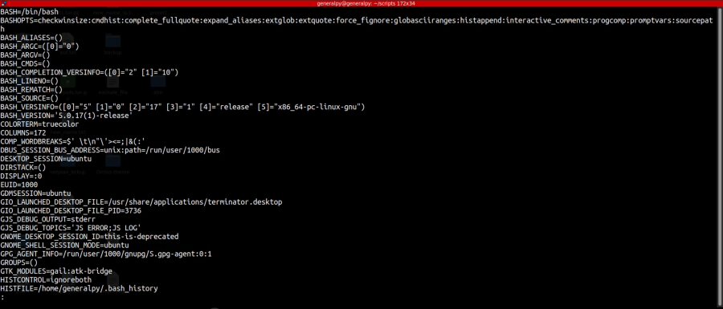
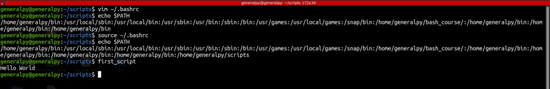

There are 2 type of variables available in bash.
1. Environment variables : These type of variables are defined for current shells and are inherited by all child shells or processes. These are like global variables which are present everywhere. They are displayed using env or printenv. We can use printenv to display details of individual environment variables.

2. Shell variables are like local variables which are only available in current shell where they are defined. They are displayed using set.

Here set is also showing functions too. To remove that behavior, use set in posix mode which can be done by :
set -o posixAnd then using set.
Environment variables are part of shell variables but reverse is not true.
To set your own environment variable use export command in ~/.bashrc or profile file .

Here we added scripts directory to PATH variable. This bashrc file is only valid for user generalpy. To make global changes, add export statements in /etc/bash.bashrc or /etc/profile.
There is also an file /etc/environment which stores environment variables. It contains name=value pairs only.